Perfume note glyphsBlackcurrant
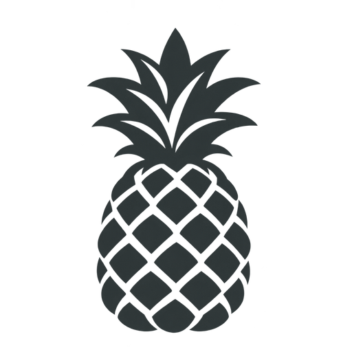
Pineapple
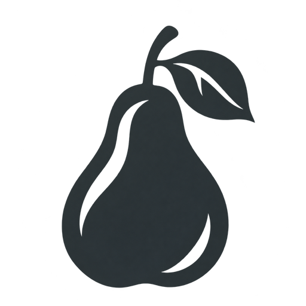
Pear
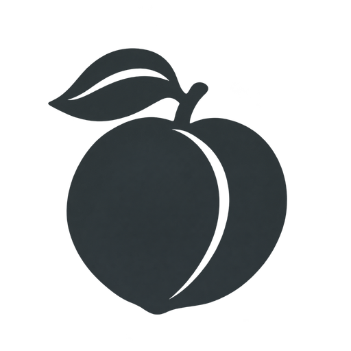
Peach
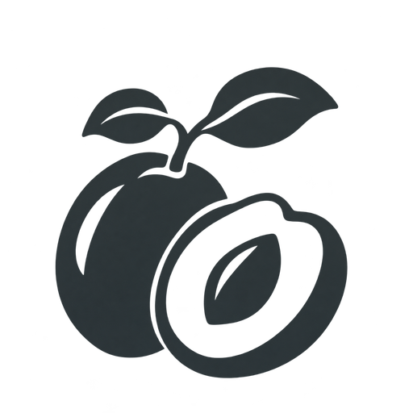
Plum
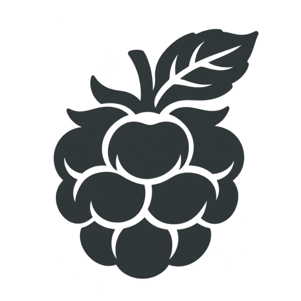
Raspberry
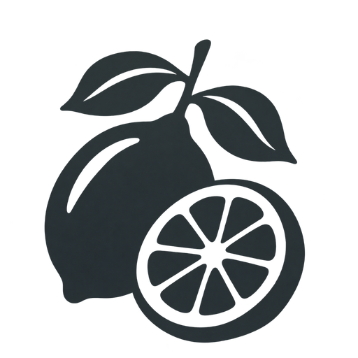
Lemon
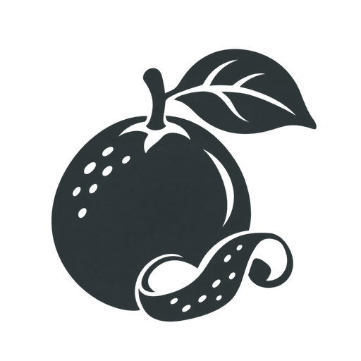
Orange
Jasmine
Lily of the Valley
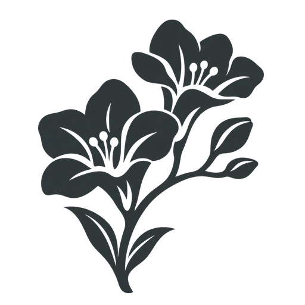
Freesia
Violet
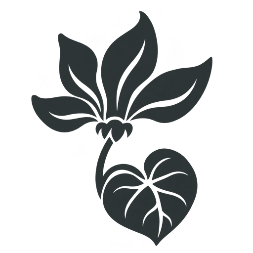
Cyclamen
Ylang Ylang
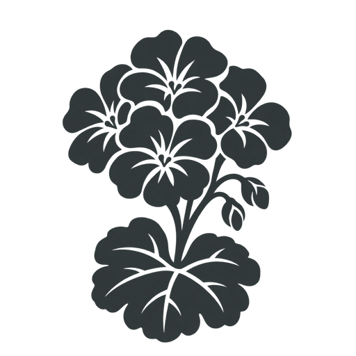
Geranium
Heliotrope
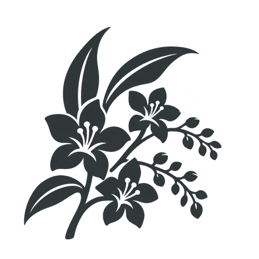
Coconut Blossom
Green
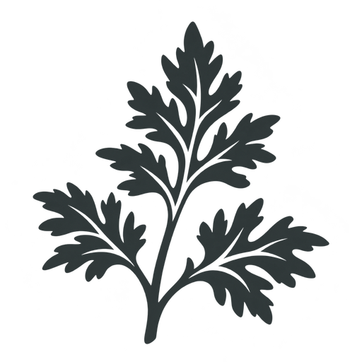
Artemisia
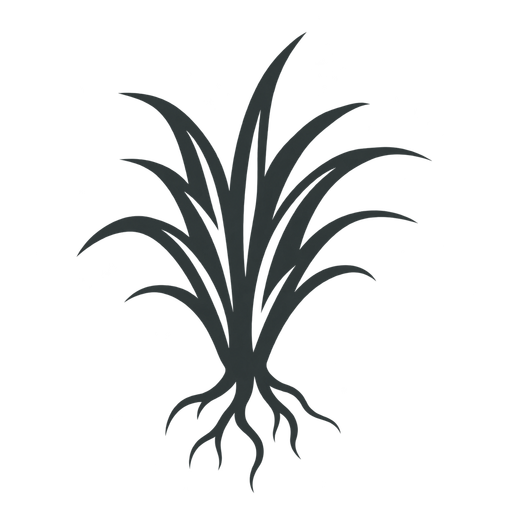
Vetiver
Patchouli
Moss
Guaiac Wood
Cashmere Wood
Cedarwood
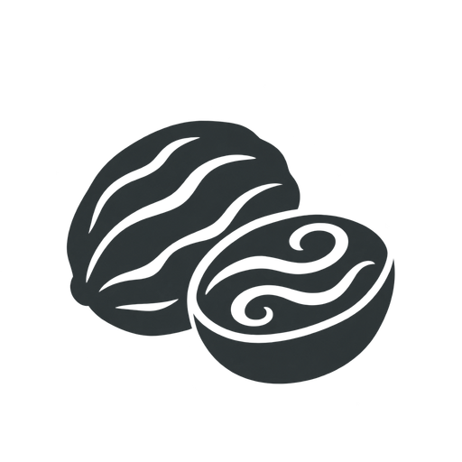
Nutmeg
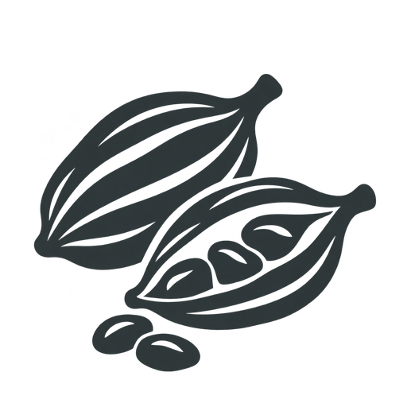
Cardamom
Cinnamon
Vanilla
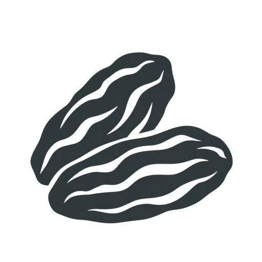
Tonka Bean
Gourmand
Tobacco
Incense
Styrax
Oriental
Animalic